Explore New York, NY
A Brief History
New York City grew from the Dutch settlement of New Amsterdam at the Hudson estuary into a major port after British takeover in 1664 and rapid expansion in the 19th century through immigration, finance, and industry. Manhattan's grid, bridges, parks, tenements, and skyscrapers record waves of arrival from Europe, the Americas, and Asia, along with labor movements and cultural institutions. The 20th century cemented its role as a media and financial capital.
Attractions Map
Top Sights & Activities
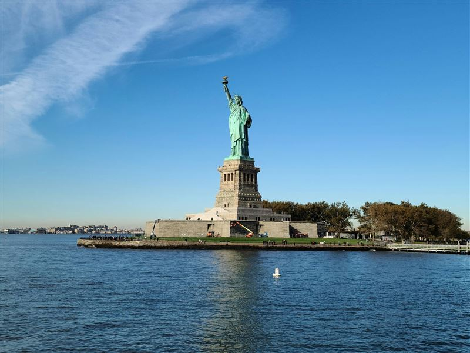
Statue of Liberty
The Statue of Liberty was dedicated in 1886 on Liberty Island as a gift from France. Frédéric Auguste Bartholdi's copper figure and Gustave Eiffel's internal structure became an emblem of arrival for immigrants processed nearby at Ellis Island.
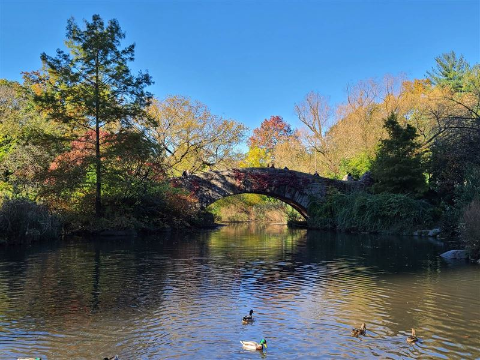
Central Park
Central Park was designed by Frederick Law Olmsted and Calvert Vaux and opened in stages from 1858. The 843-acre landscape introduced meadows, lakes, and carriage paths into Manhattan's expanding 19th-century grid.
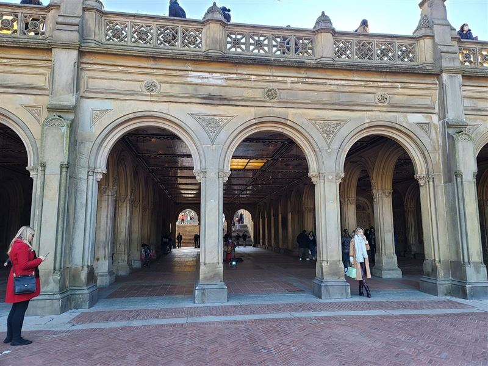
Bethesda Terrace
Bethesda Terrace overlooks the Lake in Central Park and was completed in the 1860s. Its arcade with Minton tile ceiling and the Angel of the Waters fountain form a major architectural focal point on the park's central axis.
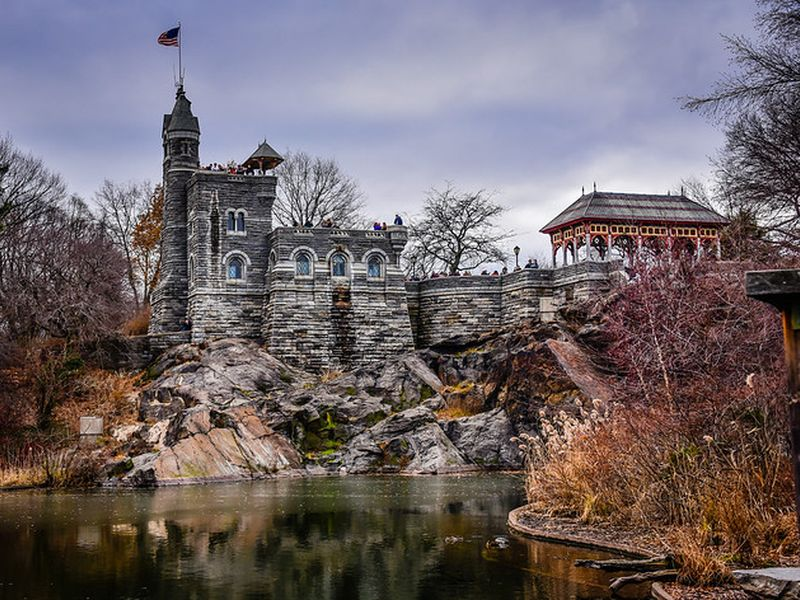
Belvedere Castle
Belvedere Castle is a Victorian folly atop Vista Rock in Central Park, completed in 1872. The stone lookout housed weather instruments and now offers views over the Delacorte Theater, Turtle Pond, and the Ramble.
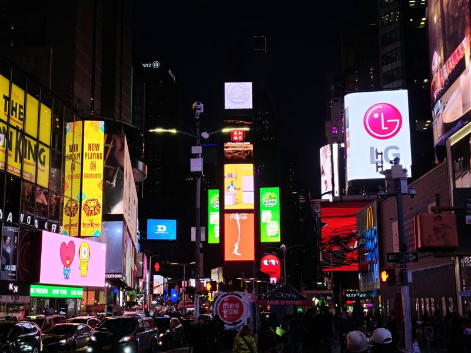
Times Square
Times Square developed at the junction of Broadway and Seventh Avenue after the New York Times moved its headquarters there in 1904. Bright signage, theaters, and dense pedestrian traffic define this commercial crossroads in Midtown.
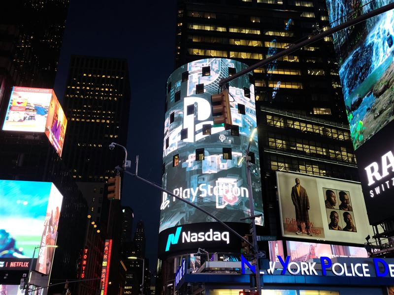
Nasdaq MarketSite
Nasdaq MarketSite is a broadcast studio and display platform at the corner of Broadway and West 43rd Street in Times Square. Its curved LED screen and street-level studio present market data and corporate events above the pedestrian plaza.
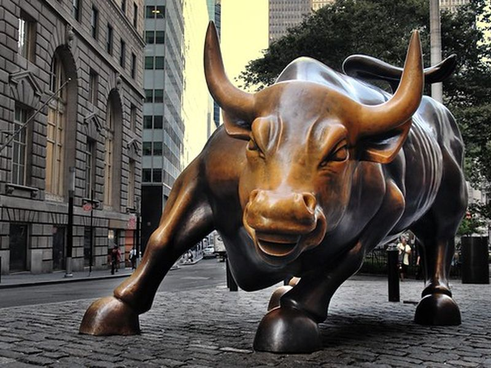
Charging Bull
Charging Bull is a bronze sculpture by Arturo Di Modica installed near Bowling Green in 1989. The work became associated with Wall Street and Financial District tourism, standing on Broadway north of the historic park.
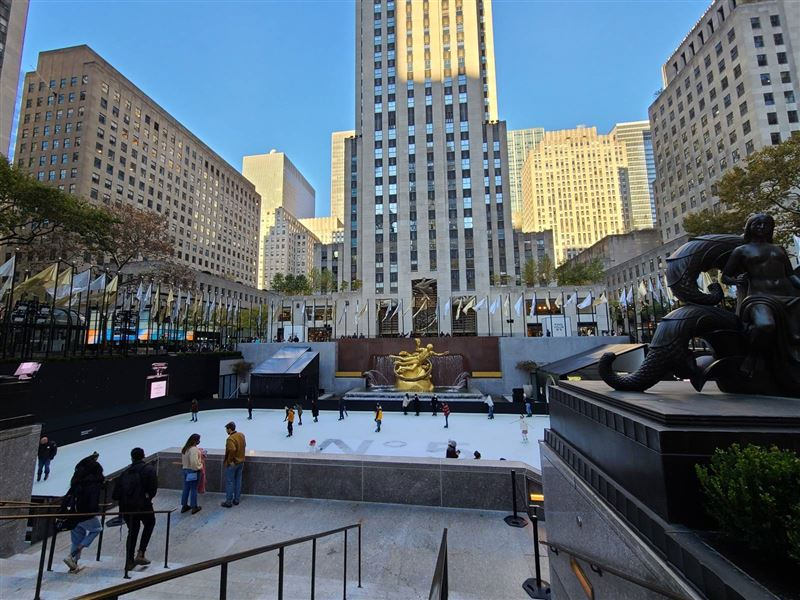
Rockefeller Center
Rockefeller Center was built in the 1930s as a commercial complex by the Rockefeller family. Its Art Deco towers, sunken plaza, and Channel Gardens anchor Midtown between Fifth Avenue and the Avenue of the Americas.
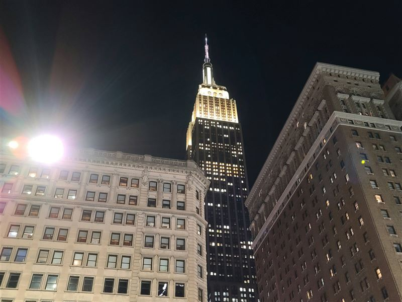
Empire State Building
The Empire State Building was completed in 1931 and held the title of world's tallest building for decades. Its limestone tower and stepped setbacks define the Midtown skyline, with observatories on the 86th and 102nd floors.
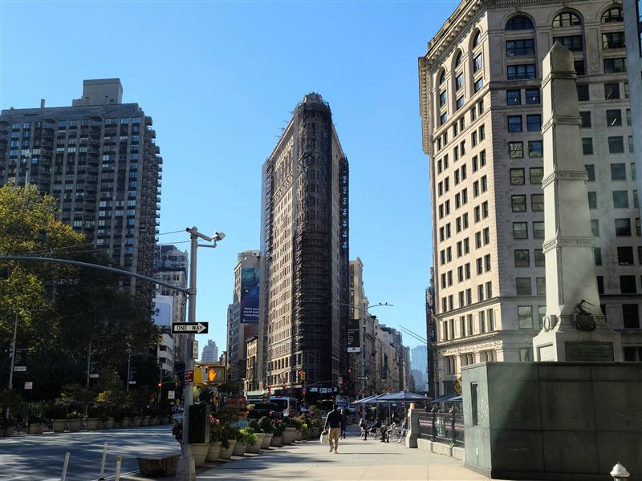
Flatiron Building
The Flatiron Building was completed in 1902 at the triangular block where Fifth Avenue crosses Broadway. Daniel Burnham's steel-framed tower and limestone façade made it one of the early landmarks of New York's high-rise era.
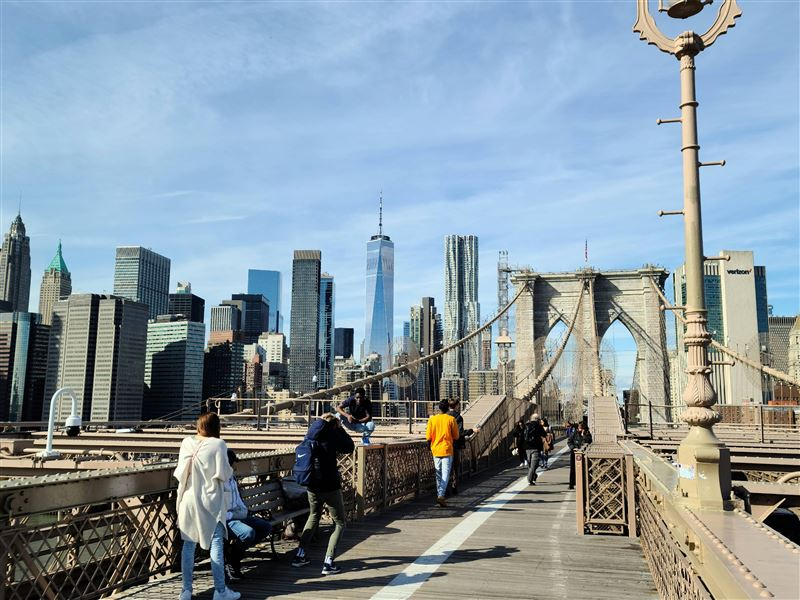
Brooklyn Bridge
The Brooklyn Bridge opened in 1883 as a suspension span linking Manhattan and Brooklyn over the East River. John and Washington Roebling's design with stone towers and cable stays became a major 19th-century engineering project.
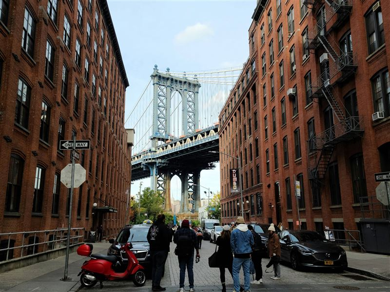
DUMBO Manhattan Bridge View
The Manhattan Bridge view in DUMBO frames the bridge towers between brick warehouses at Washington Street. The Brooklyn waterfront neighborhood's cobblestone streets and converted industrial buildings overlook the East River.
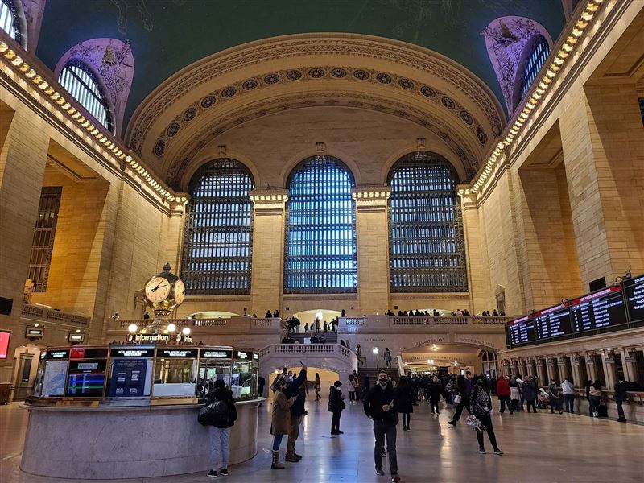
Grand Central Station
Grand Central Terminal opened in 1913 as a Beaux-Arts rail station on Park Avenue. Its main concourse, celestial ceiling, and clock above the information booth serve Metro-North commuters and visitors in Midtown East.
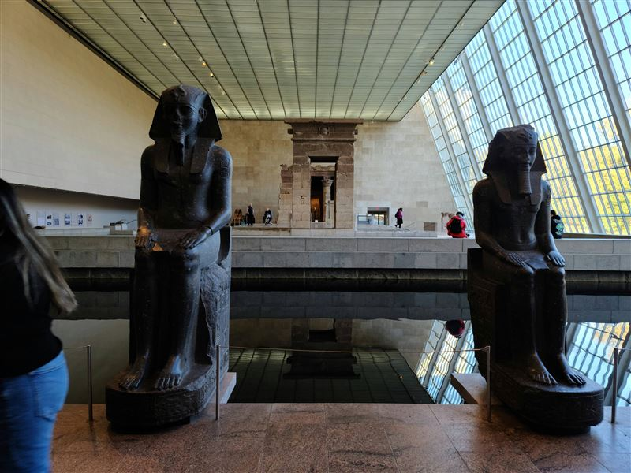
The Metropolitan Museum of Art
The Metropolitan Museum of Art was founded in 1870 and occupies a Fifth Avenue complex facing Central Park. Collections span ancient through modern art across galleries that expanded through wings added across the 20th century.
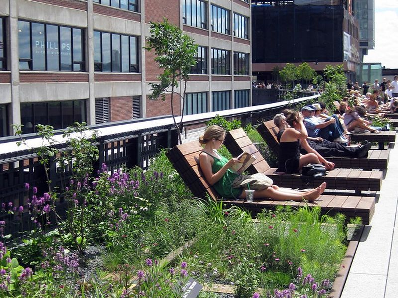
The High Line
The High Line is a public park built on a former elevated freight rail line on Manhattan's West Side. Opened in stages from 2009, planted walkways pass between converted warehouses with views of the Hudson River.
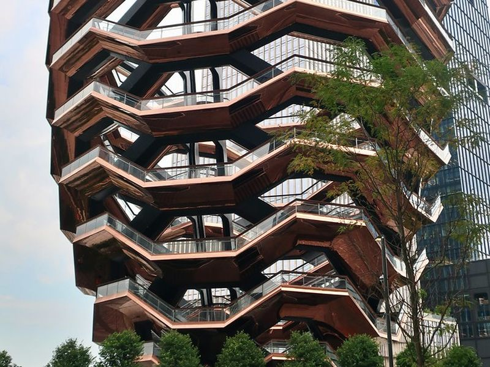
Vessel
Vessel is a honeycomb-like stair structure in the Hudson Yards public square, designed by Heatherwick Studio and opened in 2019. The copper-clad interlocking stairs rise above the plaza between the Shed and surrounding towers.
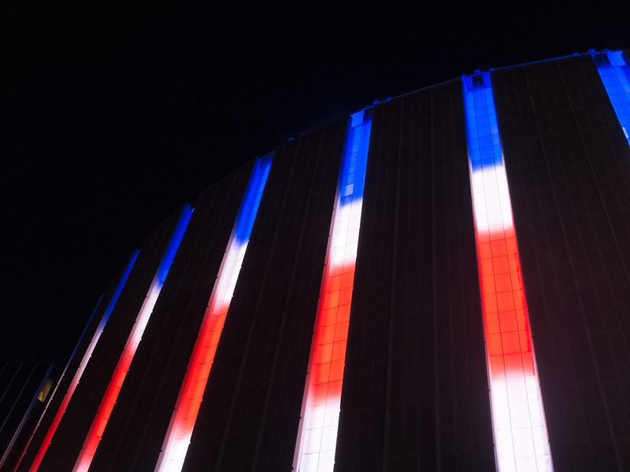
Madison Square Garden
Madison Square Garden is an arena above Pennsylvania Station in Midtown Manhattan. The current building opened in 1968 and hosts sports, concerts, and civic events on the site of earlier gardens dating to the 19th century.